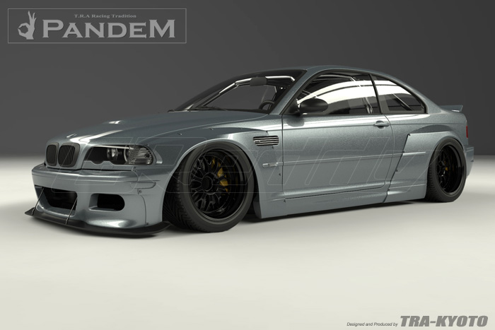

About us
Kei Miura’s design have gained global acclaim for the trend-setting style that drives automotive enthusiast, to demand authentic Rocket Bunny / Pandem aero kits. However, it's the top quality Japanese-made versions, which GReddy exclusively imports, which has gained the devotion and admiration of racers, car show winners and their installers. The main reason is, the top quality construction and fitment that only precision manufacturing can provide. Japanese-made Rocket Bunny / Pandem kits only use the highest quality FRP materials and proper curing times to prevent distortion.

Unlike most other aero kits, which rely on hand-shaped clay or urethane; every Rocket Bunny / Pandem aero kit begins with a full vehicle laser-scan. This creates a detailed 3D digital rendering of the stock vehicle. From there, master designer, Kei Miura draws inspiration from his background in Japanese classic car culture, to rethink and reinvent the overall image of modern vehicles with old school design cues. Miura pays careful attention not to ruin key features of the original car's design. He strives to enhance overall look of the vehicle. The CG rendering is then revised and refined until it meets Miura's exacting standards. The intricate process does not end there; the digital data is then entered into his in-house CNC mill. From huge polystyrene blocks, each component have it’s negative carved out to help build perfectly shaped and symmetrical master moulds. Japanese-made Rocket Bunny kits are not massed produced, so great care is taken for each component. The end result is a superior fitting aero kit with an artful design that is admired and sought after by car enthusiasts around the world.